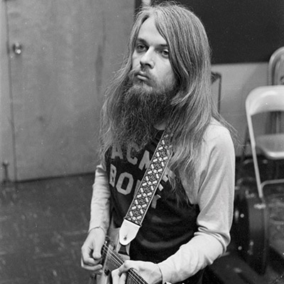

Farewell, Leon
Remembering the Master

Photos by Don Nix and courtesy of Steve Todoroff
On the morning of November 13, 2016 at 6:41 a.m. Tulsa Time, I received a text from Jan Bridges, wife of rock legend Leon Russell, which contained five simple words: Leon died in his sleep. Sometime around 4:30 a.m., Leon’s mighty heart gave out, forever silencing one of the most renowned and talented individuals to ever come out of Tulsa. Leon was a musician’s musician: a master of rock piano, an in-demand arranger and producer, and a prolific songwriter who also mentored and inspired scores of musicians and recording artists throughout his long career. I called him “Tulsa’s Mayor of Rock and Roll.”
With Leon’s passing, his fans lost a legendary artist, his family lost a loving husband and father, and I, like scores of others connected to Leon, lost a good friend.
Former-Tulsan Leon Russell’s rise to prominence in the music industry is an impressive story. Born in 1942 with a birth injury that partially paralyzed the right side of his body, he began to take an interest in the family piano around the tender age of four, and began to take formal lessons shortly thereafter. Leon’s mother, Hester, told me some years ago that the first song he learned to play was the hymn “Trust and Obey,” which he picked out by ear.
After moving to Tulsa in late summer of 1953 with his family, Russell would within a few short years begin to showcase his keyboard skills at various school functions, kiddie dances, and eventually in the active Tulsa nightclub scene, where he was highly respected by fellow musicians.
In 1959, Russell and his band, The Starlighters, were hired by one of the rock and roll pioneers, Jerry Lee Lewis, to open for him and perform as a backup band on the road. During the two months on the road with Lewis, the band endured many hardships, including running out of gas, traversing icy roads, and unruly crowds. Despite tough times, Russell was hooked. Emboldened by his work with Lewis, he decided to head to Los Angeles where the Los Angeles-based record labels were leaning in the direction of a new breed of music called rock and roll.
Through talent and ambition, Russell worked his way up through the LA club scene, eventually securing studio work as a demo musician, then quickly moving up to the ranks of the A-list studio session players. Blessed with precision, consistency, perfect timing, and a quiet demeanor, Russell became an immediate studio favorite. By 1962 he was one of the hottest session players in Hollywood, where he played on scores of hit records from that era.
After conquering the session world, he turned his attention to arranging and producing other artists, where he accumulated gold records. He eventually began to write songs and produce records of his own, and transformed himself into a master of rock piano. Russell’s boogie-woogie piano style, distinct singing style, and flowing silvermane captivated the masses in the early Seventies and helped to restore the piano’s place as a prominent rock and roll instrument.
Russell was also an intricate part of several major musical events that cultivated contemporary rock music into the state at which it stands today: the first being Joe Cocker’s memorable “Mad Dogs & Englishmen” tour, and the second being the famed “Concert For Bangladesh,” which set the pattern for star-studded benefit concerts.
Having followed his career since I first heard about him in 1965, I can tell you that of all the talented people that have roots in the city of Tulsa, probably no one has done more to help and mentor scores of fellow musicians as Leon Russell. After he became a successful session player in Los Angeles, Russell purchased a big house in the Hollywood Hills on Skyhill Drive, which became the central hangout and place to crash for many Tulsa musicians who made it to the West Coast. Russell would find them gigs or use them on a recording at his home studio. When Russell returned to Tulsa in the early 70s to live, he opened the Church Studio on Third Street, which not only put Tulsa on the map as a legitimate recording center, but also created an outlet for local musicians to record and release their own records on his Shelter Records label. To quote my friend, the former-Tulsa World Entertainment writer John Wooley, “Every rock and roll musician from Tulsa owes a great deal to Leon.”
Whether playing on or arranging major studio sessions, performing in front of thousands of fans, or encouraging other musicians to make their own mark, Leon Russell stands as a towering figure in rock and roll, as well as Tulsa’s musical history.
God broke the mold when he made Leon Russell. We may never see his kind again.

Remembrances
Compiled by Bobby Dean Orcutt
It hurt my heart to hear of Leon’s passing. He gave the GAP Band our start and took us from clubs to arenas and stadiums. I learned so much from him that will always stay with me. He will definitely be missed and I am blessed to have worked with him. I will never forget “Leon Russell & the GAP Band Live in Concert.”
Charlie Wilson
singer/songwriter, The GAP Band
My darling Leon Russell passed away. He was a mentor, inspiration and so kind to me. Thank God we caught up with each other and made “The Union.” He got his reputation back and felt fulfilled. I loved him and always will.
Sir Elton John
longtime friend
Goodbye dearest Leon. Maybe it’s selfish of me, but I wish it weren’t time for you to go. There are so many unfinished sentences between us.
Thank you for the numerous musical opportunities that came my way because of you, for the good times with the band and the friends we made on the road, for the beautiful songs you’ve written, and especially for the style of down home music you created.
Leon, please take my best wishes with you for a safe journey. And when you reach the other side and enter through the Pearly Gates, it is my greatest hope that a grand celestial piano is tuned up and waiting for you to play some deluxe Rock n Roll. WOW!!! The Angels and Saints never heard it so good.
Claudia Lennear
Shelter People backup singer and longtime friend
Take a look at the documentary “Mad Dogs and Englishmen,” and it’ll quickly become apparent that, for a brief and shining moment, Tulsa was nothing less than a crossroads for the international rock scene. Then consider the impact all our Okie rockers had a few years earlier, helping ignite the pop-music explosion of the 1960s. Both of those situations are due in no small part to Leon Russell.
As one of the first of those late ‘50s-early ‘60s Tulsa expats to find steady work in Southern California, he opened his home to scores of other musical homeboys, giving them a place to stay while they went about trying to gain their own musical footholds. And when he moved back to northeastern Oklahoma around 1970, his Church Studio and Shelter Records quickly became magnets for musicians from all over—especially those right here at home.
Years ago, I asked Leon about the so-called Tulsa Sound, something I’ve spent a lot of my writing life trying to pin down, and even in trying to determine whether it actually exists. He said he supposed there was one, but, he added, “You’re talking to somebody that’s in the middle of it. That’s kind of like asking a fish about the properties of water.”
Leon Russell indeed spent the greater part of his life immersed in the Tulsa Sound. And he didn’t only live in the middle of it—he was also its magnetic core.
John Wooley
author and Oklahoma music historian

I lied. To get my job with the old man. I said I could play multiple instruments. I figured out a couple tricks on a couple instruments and somehow never got fired, or exposed as a fraud. For reasons I’ll never know, Leon liked me. He quickly saw through me and became very aware of my anxieties. One day he called me out and told me I needed to not be so critical of myself. I soon became a disciple. I always wanted him to approve of everything I did, on and off the stage. He never was one to fall all over himself to tell me if I was doing good or not. So, for someone as insecure as me, the fright only compounded daily. After years, I discovered that his approval came in every day conversations. We opened up to each other about a lot of things. We discussed at great length pressing matters such as food, religion, and everything salvation be it culinary or spiritual. This is an inside thing between me and him, but I will forever be grateful that he let me “In on the joke.” That conversation alone opened many doors into my being. He looked out for me. He took advantage of me. He helped me. He forsook me. Thru it all, I know now, that he did care for me. His history, his legacy, his contribution, his work... that means little to me. Being in his care means everything to me. A few of us had that life-changing experience. I thank God for the blessing of making music as Leon’s friend, and for being in his care! His shadow cast, is so eternally blotting, that those of us left behind can play comfortably in the shade. I will miss my boss and my mentor. I will miss the privilege of playing music with him and participating in the Holy Ghost movement that he channeled night after night. I will miss his sheepish-grin that awaited me on the bus after every show. I will miss him playing “Stump The Band” in front of 1000 people. I will miss his subtle approval in every way. I will miss my friend. What a life I have lived, for my short time with a true master. I feel as if I am the sparrow.
Beau Charron
guitarist and multi-instrumentalist, The Leon Russell Band
When Leon was touring in the late 60s with the Shelter People and his fabulous background singers, I never missed a show of his in Detroit. Those girls inspired me to begin my musical career being in bands. I had all of Leon’s albums all over my bedroom walls. I told my mother, “I’m gonna sing with him one day,” and she said, “oh that’s nice.” A few years later it happened. I was invited to Tulsa by Jamie Oldaker and Dick Sims, who I met working with Bob Seger. After that ended, I moved to Tulsa and we began playing. Leon sat in with us as did many of Tulsa’s finest. Next thing I knew I was asked to be in his band. He was a great inspiration to me in many ways, so powerful and commanding with incredible charisma, not to mention his amazing songs. I’m proud of that time and will cherish those memories always.
Marcy Levy
singer/songwriter and longtime friend
To sum up what Leon meant to me in a few words is very difficult. Before I met him and played with him he was a mysterious wizard rock legend that I listened to as a kid growing up in Tulsa. After meeting him and living with him for eight years on the road I learned that he was a caring, respectful, genius of a man. I’ve never met anyone quite like him—he would create constantly no matter where he was and always had a better way of doing things. He seemed to know something about everything, and was never satisfied with how something came straight out of the box. He had to modify and customize everything he owned because he had an idea of how to improve on it. I learned so much from him in the time I had with him, he changed the way I look at life and music forever. He felt that music, food and family were the cornerstones to life and it was evident in the way he wrote and lived. I’m really gonna miss that crazy hillbilly.
Brandon Holder
percussion, The Leon Russell Band
I grew up on a farm outside of Tulsa. I first discovered Leon in the late 60’s by looking at producer and writer credits on records. I was a little late to the game compared to the Tulsa folks. And then, I saw a little poster on the OSU campus in Stillwater for the Mad Dogs and Englishmen show in Tulsa. That was the life-changing event that I’ve never recovered from. Still, after all these years, it’s the best band I ever heard. The best rock and roll show I’ve ever seen. Multiple drummers and guitar players. Almost too many singers to fit on the stage. Horns, kids, and dogs. Joe Cocker doing some sort of magic crazy-man singing. And Leon as a full tilt circus ringmaster. A circus you wanted to run away from home and join. AND—Leon was from Tulsa!
One of the main problems with the finality of escape from this earth—one of the main problems for us left behind—is that the time for questions and answers is over. Despite the mass of hours we spent together, there are so many questions that I so much hoped to ask him someday. But that time has ended. As Leon himself famously sang, “Reflects the human hunger for questions never asked.”
Steve Ripley
singer/songwriter, The Tractors, and longtime friend
My friend, my mentor, my role model. I wouldn’t give back one day of the time I had with him. What a life.
Jackie Wessel
bassist, The Leon Russell Band
Leon was a brilliant musician and songwriter. I was very fortunate to have had the chance to work with him and will always remember him as one of great artists of our time. He will be missed by all. He was always my hero and I will hold him close to my heart forever … rest in peace my friend.
Jamie Oldaker
percussionist and former Shelter People staff
My grandmother told me once that if you come to the golden years of your life with just one true and loyal friend, you are a very wealthy person! According to what she so lovingly said, I am indeed a very, very wealthy person because I was blessed to have been given Leon Russell as my lifelong loyal friend and mentor. He groomed my music gifts and inspired my singing for close to 50 years! He watched over me when I was a young mother and made me feel loved and respected. I will never forget him! He is tucked safely in my heart, spirit and all those glorious memories. Rest sweet Leon. I love and
adore you!
Ann Bell
Shelter People backup singer and lifelong friend
In 1998, the LeonLifers were simply an internet group on OneList, so that goes waaay back. Marcia Bilynsky started the Group, and she chose Rick Colburn—may he rest in peace—to be the original moderator. When Rick was in his last days he asked me, literally on his death bed, to take over. It’s been about 16 years. In 2000, we hired Leon to do a show for us at Coyote’s Club in Louisville, KY. We had never met each other in person, and ended up doing what we told our kids NOT to do: send money to someone on the internet that we didn’t know. We did anyway.
Because of Leon’s music and lyrics, we grew into a tightly knit family, we knew each other’s kids names, birthdays, and what was going on in each other’s lives. I have gained approximately 2,500 friends due to Leon’s music.
Steve Burns
head moderator of the LeonLifers, the Leon Russell fan club
.jpg)
.jpg)